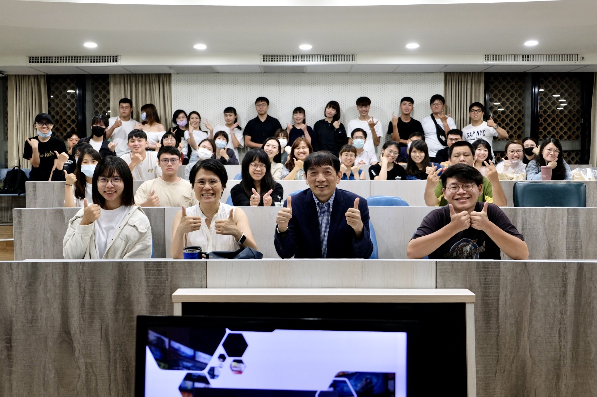
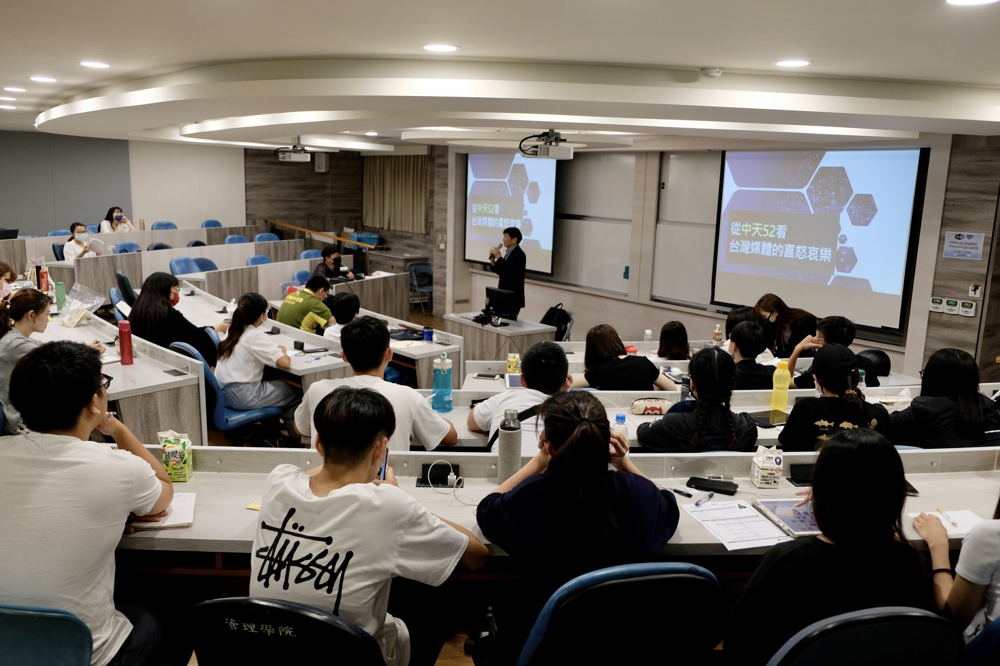
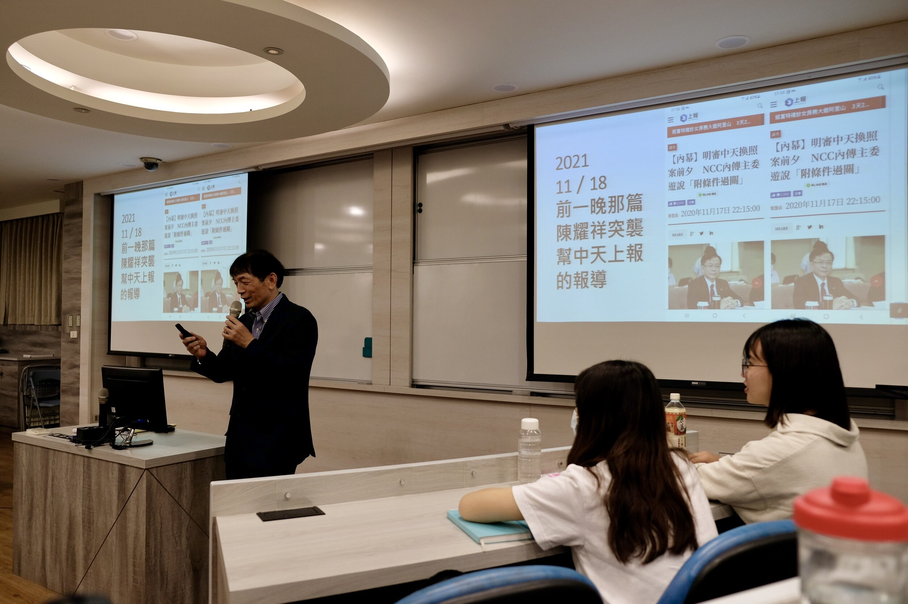
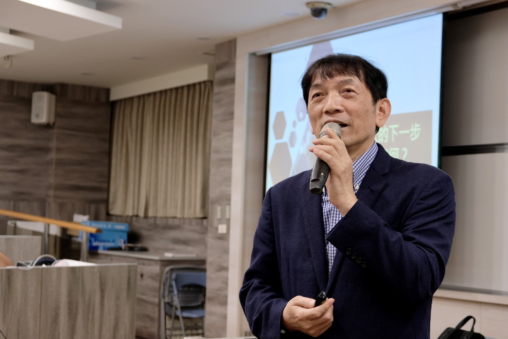
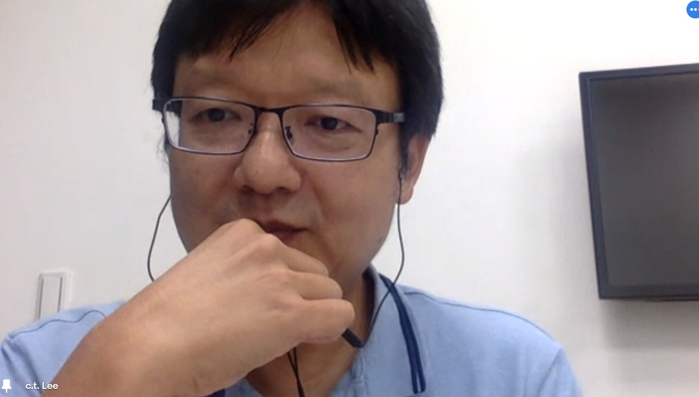
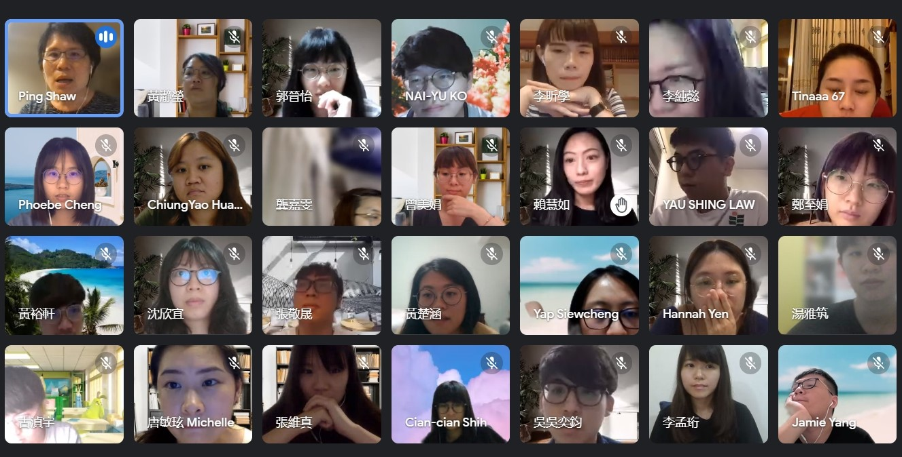
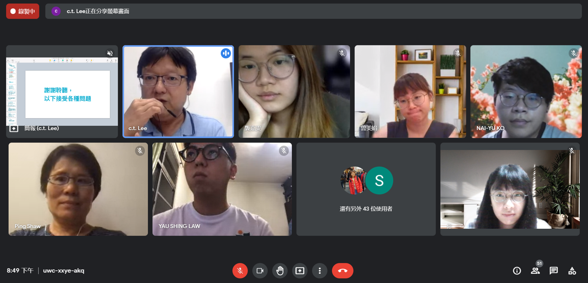

【封面人物】關於那些年的外商經驗 看透企業傳播的奧秘
|
【記者黃梓勛／採訪報導】
|
「因為疫情，我過去這一年已經被隔離了87天，很多人都不能想像這是一個什麼樣的生活。」香港中文大學企業傳播碩士課程吳世家老師苦笑著說。儘管如此，老師仍於疫情下善用時間閱讀與寫作，出版了《向時尚品牌學風格行銷》一書，希望提供對品牌管理與行銷有興趣者參考。由於老師在企業社會責任(以下皆簡稱CSR)、企業傳播、永續時尚等領域擁有相當專精的知識，因此受蕭蘋所長之邀請於本學期在行銷傳播管理研究所開設「企業傳播與實務」課程。藉這難得機會，本次封面人物邀請到了吳世家老師，以其跨文化經歷向大家分享她對企業組織內部專業的見解。
 |
▲《向時尚品牌學風格行銷》由吳世家老師於疫情期間書寫完成。（照片/吳世家提供） |
企業永續很重要 CSR專家如是說
吳世家老師任教於香港中文大學企業傳播研究所，且因重視永續規劃與CSR策略，所以每年都會主辦CSR論壇。針對企業在CSR上的表現，以香港的研究結果指出規模小的中小企業在履行CSR上的行動力與彈性相對較高，因此相較於規模龐大以致內部流程繁瑣的上市公司，規模小的中小企業在履行CSR上的整體表現相對較好。透過老師對CSR的獨到見解，相信在她的課堂上，同學們皆能從中學習到許多關於CSR的知識。
 |
▲吳世家老師（右一）主持2019年臺北時裝週國際時尚論壇。（照片/吳世家提供） |
發覺品牌差異化 從跨文化思考開始
吳世家老師對議題的獨到見解，是在個案比較的累積下養成。她以L'Oréal集團為例，說明香港子公司與台灣子公司執行CSR上的差異。她指出香港沒有工廠，所以較注重業務團隊與零售端的消費者溝通；而台灣較關注在地議題，比如女性議題，故執行上會以在地做考量。同一品牌會因為國情文化的差異關注不同的議題，因此老師以其自身經驗鼓勵台灣同學多練習個案比較，以及多關注世界各地的議題，以培養跨文化思考的能力。
 |
▲吳世家老師（左上一）與同學在「企業傳播與實務」的視訊鏡頭前合照。（照片/黃梓勛提供） |
法國人為何自認英文不好 吳世家老師現身說法
談到跨文化思考，吳世家老師認為語言是幫助文化交流的關鍵。她提及在Chanel法國總部出差的經驗，當時的法國老闆曾建議她學習法文讓溝通更加便捷，法國老闆謙虛地表示法國人的英文表達不甚理想，常常懷疑自身用詞的適當性。比方說相較於一般人會選用較溫和的字彙敘述「不可以」的概念（例如：don’t、stop、not allow），法國人則會採用較強烈的字眼（例如：This is forbidden.）。由此可知，如果有機會多學習第二外語言或方言，除了可以促進交流，也是與人快速破冰的好方法。
由於香港中文大學的課程在5月中結束，在蕭蘋所長的力邀下，吳世家老師成為行傳所「企業傳播與實務」課程的協同教學業界專家。故在今年5月和6月，行傳所同學們有機會從老師跨文化的經驗中瞭解到CSR、奢侈品牌行銷、外商企業傳播策略等實務技巧，這些經驗的累積，呈現在豐富的授課內容中，為同學們帶來了一段精彩的學習旅程。
|
【行傳佳音】行傳所與政治所簽訂雙主修合作 培育跨領域通才 |
| 【記者曾榆庭／採訪報導】 |
|
政治傳播是近十年來的重要研究趨勢之一，它匯集政治理論、媒體研究及商業行銷等概念，不僅被應用於選戰攻防，同時也是政府進行政策宣達及與民溝通的基礎。而政治傳播更是行傳所極為重視的研究方向，例如曾融合大選時事開設「競選策略與政治行銷」課程，讓同學們實際進行一場競選攻防戰！為了能更好地整合學術能量並發揮綜效，行傳所於5月19日與本校政治所正式簽訂雙主修合作協議，開放同學申請雙聯學位，藉由匯集兩個專業領域的優秀師資，以期培育更多跨領域的專業人才。
 |
| ▲蕭蘋所長（圖右）及政治所劉正山所長合影。 |
機會不容忽視 申請資格完整說明
想要申請雙聯學位者該如何準備呢？首先在申請資格部分，學生必須符合每學期學業成績名次在全班前50%，或該學年每學期學業成績平均達GPA3.38（百分制80分）以上才能遞交申請。申請者需要檢附歷年成績單、自傳及讀書計畫，另可附上特殊表現及其他有助審查之資料，建議對於雙聯學位有興趣的同學可以提早蒐集個人備審所需資訊。
 |
| ▲兩位所長共同簽下雙聯碩士學位的合作計畫。 |
雙主修學分怎麼修 行傳政治皆並重
而在修課規定部分，行傳所的同學除了需要符合所上的畢業規定外，還需修讀至少12學分的政治所課程，其中包含指定專業必修課程，例如「社會科學的哲學」、「社會科學方法論」、「政治理論」及「國際關係」等，培養同學對西方政治思想及政治哲學的認知，同時訓練在社會科學中的思辨及統整能力。除此之外，同學還須在指導教授的推薦下，自選一門三學分的政治所課程進行研讀。
 |
| ▲蕭蘋所長代表簽定雙主修協議。 |
取得雙聯學位 未來潛力翻倍
對於行傳所的學生而言，畢業後除了踏入業界外，投身公部門也是不錯的選擇之一，所上也有許多優秀學長姐在公部門中發光發熱。此次與政治所簽定合作的雙主修合作計畫，不僅能夠讓同學同時取得管理學與政治學碩士學位，還能拓展在公部門或政治公關領域服務的機會增加未來在政府服務、政黨經營或是政治公關等領域的資歷及實力，可謂一舉數得。詳細申請資格、修課規定及口試辦法皆已修擬完畢公告於本所官網，歡迎對於政治傳播議題有興趣有想法的同學踴躍提出申請，期待在嶄新的時代中，能有更多具備專業的年輕聲音出現。
|
|
| 【記者黃梓勛／採訪報導】 |
行銷傳播管理研究所的所學會每學期都會舉辦一場活動，而本學期的活動「行傳所明星對抗賽」於5月7日舉行，行傳所的同學們將分成黑隊與白隊，兩隊隊長分別由碩二張益豪與碩一古湞宇出任，帶領隊員們進行三場比賽。此次判決由碩一柯乃瑜主持，而碩一班導師譚躍也前來與同學們共襄盛舉。
 |
| ▲譚躍老師（二排左三著黑色衣服）與同學們大合照。（照片/張維真提供） |
黑白兩隊拚盡全力 兩人三腳踩出超強默契
第一場比賽為「兩人三腳」，為了贏得首勝，兩隊隊員皆肩並肩的賣力向前走，雖然去程由黑隊獲勝，但於後半場的回程，白隊透過意見的交換在錯誤中尋找解決辦法，並反超黑隊抵達終點，最終雙方一比一平手。由此可見，合作與互信的建立克服了腳上繩子的束縛，在這場精采的「兩人三腳」比賽中，引領著團隊奪得勝利。
 |
| ▲白隊快步邁向終點。（照片/黃梓勛提供）
|
黑隊過五關斬六將 賽情逐漸升溫
黑隊為了追回比分，在第二場比賽「行傳不NG」中，只耗費白隊一半的時間便完成所有任務。「行傳不NG」以七項任務組成，只要連續成功完成七項任務方可結束計時，過程中若任一項挑戰失敗，就必須回到第一項重新開始，而七項遊戲的順序分別為綠豆洗臉、兩人跳繩、吹乒乓球、拖鞋入框、立寶特瓶、吹散便條紙、好運抽撲克牌。當中最難的任務莫過於在三次機會中成功讓寶特瓶於旋轉後站立，然而黑隊的江庭毅同學在第二次挑戰下即完成任務，挾著這股必勝的氣勢，最終黑隊奪下了此局分數。
 |
| ▲江庭毅同學在立寶特瓶一役中立下戰功。（照片/張維真提供） |
黑隊能否奪冠 白隊蓄勢待發
最後一場冠軍賽為「龍球大車拼」，其規則與排球相符，但將排球換成彈性極高的瑜珈球。該場比賽分成三局，三戰兩勝，分別為女生組、混合組、男生組。女生組由黑隊獲得勝利，故白隊在混合組開場便展開強烈攻勢，無奈失誤頻出，最終以10分之差飲恨落敗，由黑隊獲得「行傳所明星對抗賽」的勝利。
.JPG) |
| ▲白隊在「龍球大車拼」中背水一戰。(照片/黃梓勛提供) |
傳承行傳活動 所學會新舊交接
「行傳所明星對抗賽」的舉辦除了檯面上的比賽，還包含了傳承的意味。有別於以往活動只有所學會會長張祐滋和副會長林吟謙負責，此次活動還多了下屆所學會會長柯乃瑜與副會長鍾小惠的協助，因此比賽相關設計、流程規劃，皆是由四人腦力激盪討論得來。林吟謙副會長表示，希望能透過這次的合作帶領所學會接班人了解活動舉辦的細節，以維持交棒後所學會的穩定運作，達成組織的永續經營。
 |
| ▲柯乃瑜(左一)擔任裁判主持比賽。（照片/張維真提供） |
「行傳所明星對抗賽」的目的以趣味性、凝聚向心力為導向，所以所學會在構思比賽項目時，選擇了兩人三腳、行傳不NG、龍球大車拚等需要團隊合作的任務。由於同學們皆全心投入比賽當中，因此即便當天太陽炙熱，仍不減大家玩樂的興致。所學會透過課外活動的舉辦，舒展了同學們的身心，也替其研究生活增添不少樂趣，相信未來在新任會長柯乃瑜的引領下，也定能增進行傳大家庭間彼此的認識及情感上的溝通，以成就良好的學習氣氛。
|
【行傳講座】關台風波後的新聞業 資深媒體人談中天事件 |
| 【記者郭晉怡／採訪報導】 |
|
去年12月中天新聞台因衛星廣播電視事業執照換發未過，成為台灣首家遭停播的電視新聞台。轉瞬之間，中天下架事件已是半年前的事，而後的新聞媒體出現了哪些轉變？行銷傳播管理研究所5月7日邀請中嘉數位股份有限公司顧問，也是前中央社社長的陳申青，以「從中天52看台灣媒體的喜怒哀樂」為題，與大家談論中天新聞台至有線電視52台下架後，新聞產業的生態變動。
|  |
| ▲陳申青顧問（前排右二）與蕭蘋教授（前排左二）和同學合影。(照片/郭晉怡提供) |
秉持專業原則 拒絕新聞娛樂化
在YouTube播新聞，就該順應娛樂化？關台後的中天新聞轉戰YouTube重起爐灶，當家主播們除了會帶領觀眾一同於聊天室刷貼圖外，甚至還會邊吃火鍋邊聊時事。針對新聞娛樂化的現象，陳申青顧問認為新聞本質是「專業」，娛樂性質的事物有娛樂新聞，故不論播放平台為何，新聞皆不能「娛樂化」。由此可見，倘若觀眾追求的目標是娛樂，在YouTube上觀看新聞自然不會是首選，因此新聞應該持續秉持「專業」的基本原則，拒絕新聞娛樂化。
|  |
| ▲陳申青顧問介紹自身經歷。(照片/郭晉怡提供) |
下架中天52台 有線電視業者成最大贏家
隨著中天事件的落幕，陳申青顧問指出「有線電視業者」將是這場風波下的最大贏家。中天新聞台的高收視率讓其被視為是具有價值的頻道，因此中天新聞的下架連帶影響了中天電視在台灣境內剩餘的兩個頻道（中天綜合台、中天娛樂台）價值，使有線電視業者需要給付給中天電視的費用減少，因而獲利提升。新聞產業經過此次動盪後，人們紛紛反思起新聞台的有形與無形價值，期望在大眾重新審視媒體價值下，各家新聞台能化評鑑危機為調整新聞環境的轉機。
|  |
| ▲陳申青顧問分析中天下架關鍵原因。(照片/郭晉怡提供) |
52台卡位戰 留住人才是關鍵
在一系列中天下架事件的精彩分析後，陳申青顧問向同學們拋出「是否認為華視新聞可以撐起52台？」的問題。而陳顧問針對該問題強調了「用人」的重要性，人盡其才能減少員工辦事間的摩擦，隨之公司內部群體的和諧穩定著公司經營，但他也表明人才的離開並不代表華視新聞支撐不起52台，只是在相形之下會提升公司運作的困難度。因此若要事半功倍，除了人資必須將員工放置在對的位置上，留住人才是關鍵。
|  |
| ▲陳申青顧問向同學們提問。(照片/郭晉怡提供) |
中天新聞台的不予換照，凸顯新聞自律問題，新聞娛樂化、媒體價值等探討讓所有導致中天被關台之因素皆受大眾重新檢視，而原先罰款位居第二的三立也瞬間成為人們關注的目標。事件的發生是一時，期望大眾長期的監督能促進新聞專業的提升，力挽媒體公信力下降之趨勢。
|
【行傳講座】媒體築起新聞付費牆 挺過轉型困境邁入訂閱時代 |
【記者郭晉怡／採訪報導 】
|
「閱讀全文，歡迎加入會員」螢幕前的通知內容提醒著閱聽眾，報導內容的觀看是採取付費訂閱制度。新聞訂閱制是2017年由香港端傳媒在華文網路媒體市場首次推出的營運模式，讀者必須付費加入會員才能享有新聞閱讀資格，然而該模式也有其侷限性，並非適用於所有的媒體。故行銷傳播管理研究所6月11日邀請曾任《端傳媒》台灣新聞主編、總編輯，現任《鏡週刊》文化組副總編輯李志德，向大家分享他對付費訂閱媒體服務的洞見。
| 
|
▲李志德副總編輯透過視訊形式向同學們分享對媒體付費訂閱模式的看法。(照片/郭晉怡提供) |
台灣香港付費兩樣情 抓準市場定位是轉型關鍵
傳統媒體的營運從廣告模式轉向訂閱者付費模式之困境可從壹傳媒2019年財報上觀察到。李副總編輯根據財報數據指出蘋果日報的訂閱制獲香港市場的正面回應，然而台灣訂閱低於預測水平。香港轉型的成功可歸因於蘋果日報在反送中運動期間鮮明的反對派立場，對示威運動的支持使其網上訂閱收入大幅增加，其中部分抵銷了廣告的大幅下降。而台灣媒體種類多元、報導更新快速，且「政治利基」在台灣的稀缺性低，以致拉動付費的效果不顯著。廣告到訂閱模式的轉換，會因市場的不同產生不同效果，因此抓準媒體的市場定位是轉型付費制的首要關鍵。
| 
|
▲同學們認真聆聽李志德副總編輯的演講。(照片/黃梓勛提供) |
追求好媒體的菁英結構 支撐網路新聞付費制
在消費溝通的過程中，端傳媒將其市場定位在稀缺性高的深度內容領域。李副總編輯認為人們願意付費訂閱的目的是希望能支持符合自身定義的好媒體，憑藉過往閱讀調查數據，端傳媒精準掌握其讀者型態為一群高學歷、高消費，且願意瞭解他國事物的人，故實施內容為王的策略將會是媒體吸引讀者持續支持的關鍵。高度菁英化的結構為端傳媒2017年的付費模式打下穩固的基礎，同時這群讀者的樣貌漸漸成了實施付費訂閱制媒體的目標客群。
| 
|
▲李志德副總編輯（上排左一）回答同學們的提問。(照片/郭晉怡提供) |
權衡付費利弊的大眾媒體 創造公共與訂閱的共存環境
媒體扮演著第四權的社會角色，然而在內容訂閱的經營模式出現後，唯有公共媒體尚能在涵蓋絕大部分新聞種類需求下承擔起公共服務責任，因此李副總編輯認為政府應加強重視具有免費性質的公共媒體。另外，在商業媒體中，付費訂閱商業模式的中型媒體隨著讀者的增加帶來收益的增長，最終將有機會發展成一個新的大眾媒體。傳統媒體過往以廣告收入支撐龐大的團隊運作，倘若硬性將其經營模式轉換成讀者付費，未經市場考驗的營運制度將有可能引起讀者對新模式的高度排斥，轉型過渡期的資金短缺勢必成為媒體運作的阻礙。訂閱制的開啟能減少媒體對廣告的單一依賴，形成較為穩定的資金流，但同時也可能伴隨讀者和廣告收入同步流失的現象發生。轉型成敗之關鍵莫過於找出市場定位，抓住目標客群，期盼新聞媒體能立基於讀者對訂閱制的支持，擺脫演算法和注意力經濟，回歸內容品質以提升新聞價值。
|
|
| 講者／服務單位 |
講座講題 |
講座日期 |
| 待定 |
待定 |
待定 |
|
|